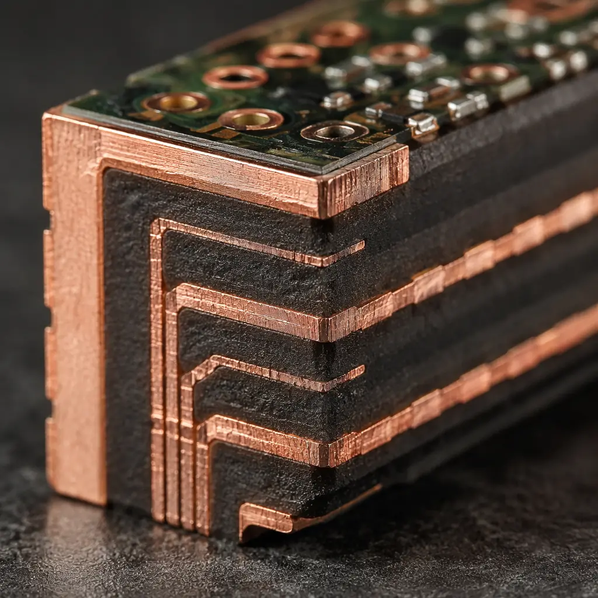
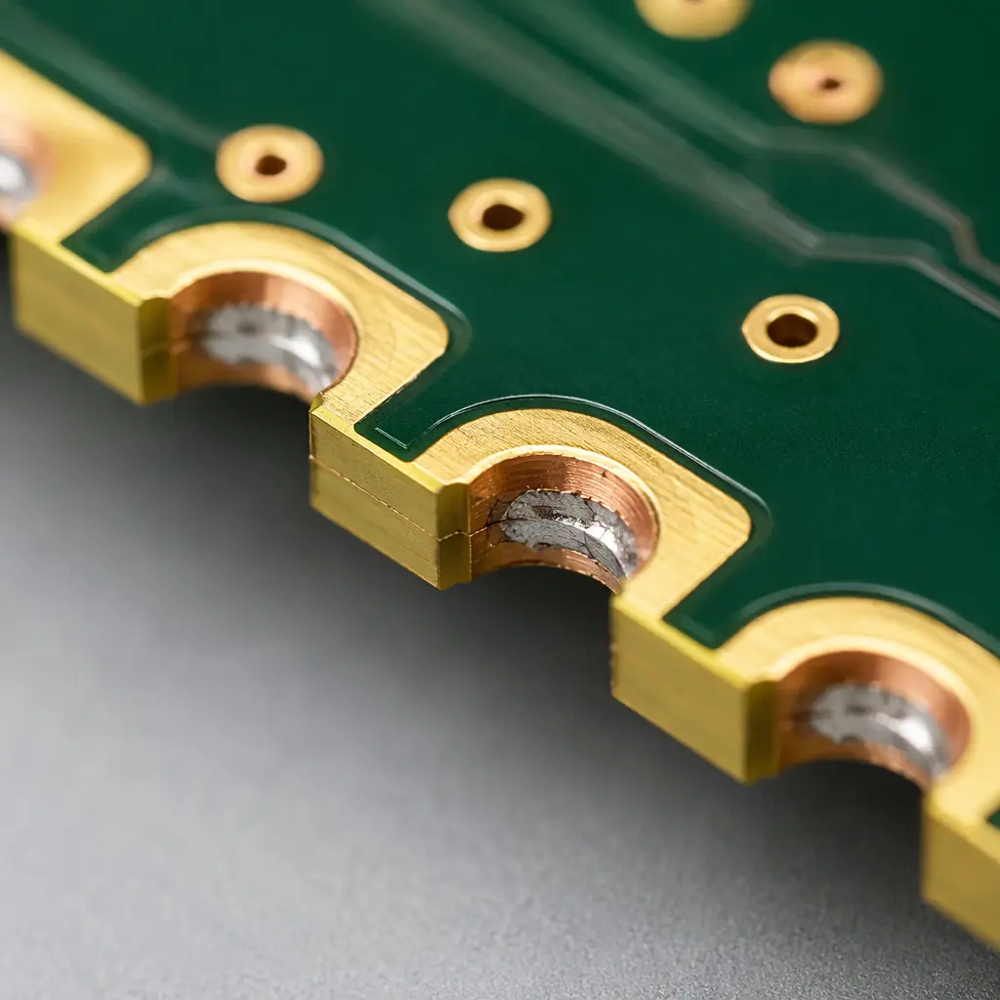
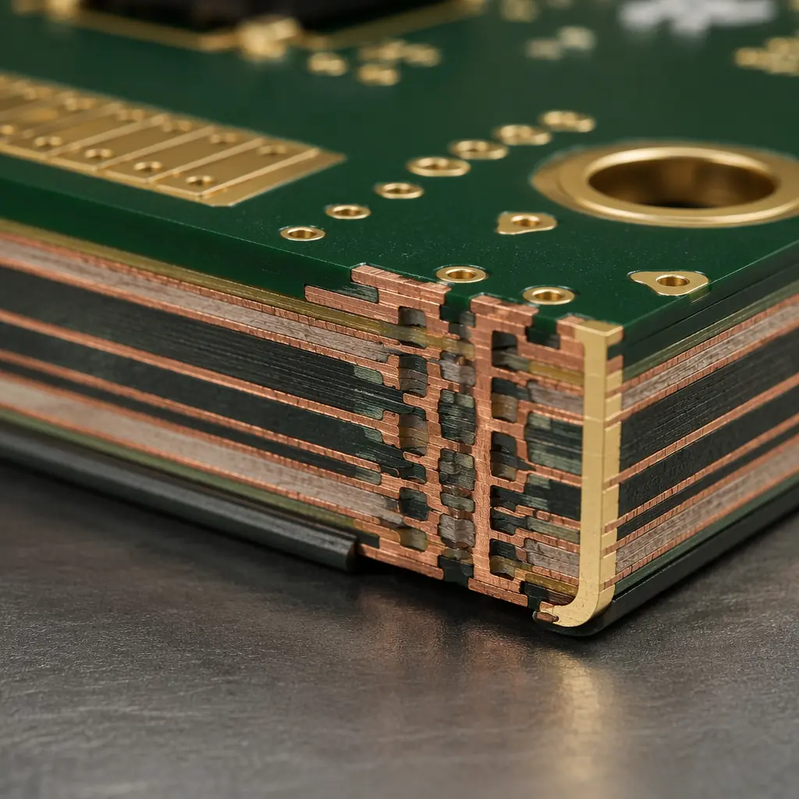
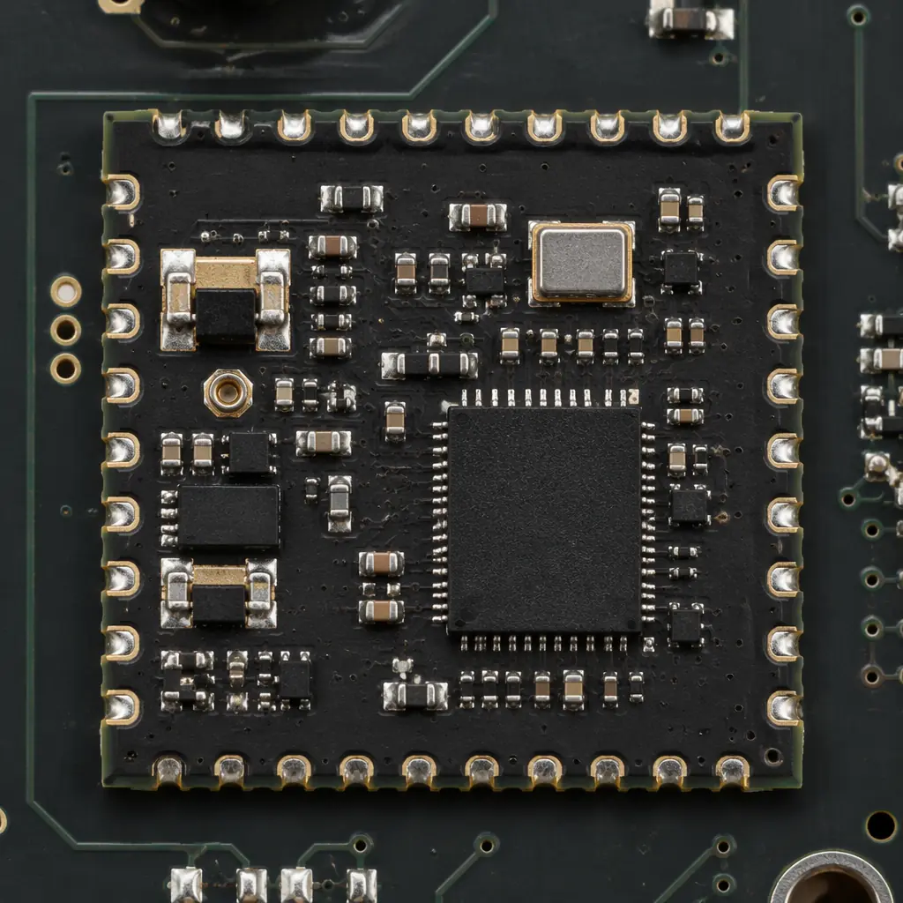

If you've ever designed an IoT sensor module, a Bluetooth LE breakout board, or a WiFi-enabled carrier PCB, you've encountered the same decision: how do you get signals from the module edge to the carrier board pads? The answer sits at the intersection of two distinct PCB fabrication technologies — edge plating (continuous copper wrapping the board perimeter) and castellated holes (half-cut plated through-holes along the edge). Both achieve sidewall metallization, but the design rules, cost structures, and failure modes are fundamentally different.
At Huaxing PCBA, we process over 80,000 square meters of PCBs monthly across 8 SMT lines, and module boards with edge metallization represent a growing share — driven by IoT, wearables, and modular electronics. This guide covers the design rules you need, the manufacturing sequence that determines yield, and how to specify the right approach for your project before you send Gerber files.

Edge Plating vs. Castellated Holes: What's the Difference?
Both technologies put copper on the PCB sidewall, but the manufacturing process and resulting geometry are distinct. Understanding this difference is critical because it determines your minimum web width, the reliability of the solder joint, and which panelization strategy your fabricator can use.
| Parameter | Edge Plating | Castellated Holes (Half-Holes) |
|---|---|---|
| Geometry | Continuous copper wrapping the PCB edge profile — top, sidewall, and bottom surfaces all metallized in one continuous layer | Individual plated half-cylinders at discrete locations along the board edge, created by routing through a plated through-hole |
| Typical Plating Thickness | 25-35 μm copper (IPC Class 2 standard) | 20-25 μm copper in the barrel (same as standard PTH spec) |
| Minimum Web | 0.30 mm between edge and nearest copper feature | 0.25 mm between castellation centers; 0.15 mm residual copper after routing |
| Copper-to-Edge Clearance | 0.15-0.20 mm | Not applicable — half-hole is the edge feature itself |
| Solder Joint Inspection | Visual from top only — sidewall joint hidden after reflow | Visual from side — residual half-barrel provides inspectable fillet |
| Best For | EMI shielding, grounding perimeters, thermal conduction edges, carrier-board module outlines | SMT-mountable module I/O (ESP32-style), pluggable daughterboards, panelized SMT sub-assemblies |
| Relative Cost | +15-25% over standard PCB (extra plating + routing step) | +10-20% over standard PCB (castellation routing + deburring) |
Key Distinction: Edge plating wraps the entire board perimeter in copper — think of it as a continuous shield or ground ring. Castellated holes are discrete half-vias at specific pad locations. If you need 40 I/O pads along the edge, you need castellated holes. If you need a ground reference that runs the full board perimeter, you need edge plating. Some designs use both.
When to Use Edge Plating: EMI Shielding, Grounding & Thermal Management
Edge plating — also called sidewall metallization or wrap-around plating — is not an I/O solution. You don't route signals through it. Its three primary use cases are electromagnetic, electrical, and thermal.
EMI Shielding — The Faraday Cage Perimeter
When a PCB module plugs into a metal enclosure or mates with a shielding can, the edge plating provides a 360° continuous ground contact around the entire board perimeter. This is standard practice in RF modules where stray emissions must be contained. The continuous copper wrap creates a low-impedance path to ground that discrete grounding vias cannot match. For RF-specific design considerations including impedance control and material selection, see our RF PCB design guide.
Ground Reference for Carrier-Board Modules
In modular electronics — think an automotive ECU carrier board with plug-in sensor modules — edge plating on the module PCB provides a low-inductance ground path to the carrier's ground plane. This is especially important above 100 MHz, where discrete ground pins introduce parasitic inductance that degrades signal integrity. The continuous perimeter contact keeps the ground potential stable across the full module footprint.
Thermal Conduction at the Board Edge
Copper is 1.7× better at conducting heat than aluminum PCB substrates, and edge plating creates a direct thermal path from internal copper planes to the board edge. In power modules where heat must be drawn to the enclosure wall, edge plating provides up to 385 W/m·K of thermal conductivity along the copper wrap — far more effective than FR-4's 0.3 W/m·K through-plane conduction. For high-power designs, combine edge plating with the strategies in our power electronics PCB guide.
ESD Protection Perimeter
For handheld and wearable devices, edge plating connected to chassis ground creates a controlled discharge path for electrostatic events. Rather than an ESD strike finding its way through sensitive IC pins, the edge plating intercepts the discharge at the board perimeter and routes it directly to ground — a technique borrowed from military-grade avionics and increasingly common in consumer IoT products with metal enclosures.
When to Use Castellated Holes: SMT-Mountable Module I/O
Castellated holes — also called half-holes or castellation vias — are the workhorse of module-based electronics. Every ESP32 dev board, every BLE module, and every LoRaWAN sensor node you've ever soldered onto a carrier PCB uses them. They transform the PCB edge into a set of solderable pads that function exactly like a surface-mount component footprint.

IoT Module SMT Assembly (ESP32, nRF52, CC25xx Style)
When your IoT module needs to be picked, placed, and reflowed by a standard SMT line, castellated holes are the only practical option. The half-barrel geometry creates a three-sided solder fillet (pad, barrel wall, and top pad) that produces a mechanically robust joint with inspectable fillet formation. This is exactly how Espressif, Nordic, and TI package their wireless modules. For end-to-end module design guidelines including antenna keep-out zones and impedance considerations, see our IoT PCB design and manufacturing guide.
Panelized SMT Sub-Assemblies
High-volume production often panelizes small PCBs in an array, assembles components on the full panel, and then singulates individual modules. Castellated holes work well here because the routing step that separates modules creates the castellated features — the plated holes are drilled in the panel, and the depaneling router cuts through them. For cost-optimized panelization strategies including V-score vs. tab-routing tradeoffs, read our PCB panelization cost optimization guide.
Bluetooth & WiFi Carrier-Board Ecosystems
The carrier-board model — where a wireless module solders onto a larger application board — relies entirely on castellated I/O. The castellation pads must handle both mechanical retention and electrical connectivity. Designers need to account for CTE mismatch between the module substrate and carrier board, particularly when the module uses a different laminate (e.g., high-Tg FR-4 on the module vs. standard FR-4 on the carrier). For surface finish compatibility considerations, see our PCB surface finish selection guide.
Critical Design Rules: Web Width, Clearance, and Pad Geometry
Castellation yield starts with the design file. These are the rules our CAM engineers enforce before any castellated board enters production — and the numbers that determine whether your board ships on time or gets flagged for engineering review.
| Design Parameter | Minimum (Standard) | Recommended (High Yield) | Advanced Capability |
|---|---|---|---|
| Castellation Pad Diameter (finished) | 0.50 mm | 0.70 mm | 0.40 mm |
| Castellation Hole Diameter (drill) | 0.30 mm | 0.40 mm | 0.20 mm (laser) |
| Castellation-to-Castellation Pitch | 0.80 mm | 1.00 mm | 0.65 mm |
| Residual Copper Web (after routing) | 0.15 mm | 0.25 mm | 0.10 mm |
| Copper-to-Board-Edge Clearance (edge plating) | 0.20 mm | 0.30 mm | 0.15 mm |
| Edge Plating Width (wrap-around band) | 0.50 mm | 0.80 mm | 0.35 mm |
| Minimum Web Between Edge Feature and Via | 0.30 mm | 0.40 mm | 0.25 mm |
Factory Reality: The #1 cause of castellation rejection at CAM review is insufficient residual copper web. When the router cuts through a plated hole, it must leave at least 0.15 mm of copper barrel on each side. If your pad diameter minus router diameter leaves less than that, the half-hole collapses during routing — and you get an open circuit at that pad. Always design with 0.25 mm residual minimum for production margin.
The most common pitfall we see in incoming Gerber files is routing tolerance stack-up. The router bit has a ±0.10 mm positional tolerance, and the castellation drill has its own ±0.05 mm positional tolerance. If you design with the absolute minimum residual web (0.15 mm), these two tolerances can consume your entire margin. For HDI designs where castellated features couple with microvias, see our HDI technology guide for advanced stackup strategies.
The Manufacturing Sequence: Why Routing Order Determines Yield
Edge plating and castellated holes require a non-standard fabrication sequence. Standard PCB manufacturing routes the board profile as the final step. But sidewall metallization inverts this — you must plate after profiling, not before. Here's the actual sequence our factory uses:
Inner Layer Imaging & Etch (Standard)
Inner layer patterns are imaged and etched as normal. Copper features that will connect to edge plating must extend to the board outline with the specified copper-to-edge clearance. This is also the stage where internal ground planes are designed to contact the future edge plating — critical for EMI shielding modules.
Lamination & Through-Hole Drilling (Standard)
Layers are pressed and standard through-holes (including future castellated holes) are drilled. At this stage, castellated holes are just regular plated through-holes — they haven't been cut in half yet. Critical: the castellation drill must be in the drill file with the same tool number as the mechanical drills, not as a separate routing pass.
Electroless Copper & Panel Plating (Standard)
The entire panel — including the future edge-plated surfaces — receives electroless copper deposition followed by electrolytic panel plating. At this stage, the board edges are still part of the panel frame, so the sidewalls are not yet exposed. The plating thickness target is 25 μm in the barrel (IPC Class 2) with a minimum of 20 μm.
Outer Layer Imaging, Etching & Solder Mask (Standard)
Outer layers are patterned, etched, and solder mask is applied. The solder mask opening for edge-plated features follows special design rules: the mask dam must be at least 0.10 mm from the board edge to avoid peeling during the subsequent routing step.
Surface Finish Application (Pre-Routing)
ENIG, HASL, or OSP surface finish is applied to exposed copper — including the pads that will become castellated half-holes. For edge-plated perimeter features, the surface finish extends onto the top and bottom copper pads but not onto the raw sidewall, which receives copper-only plating. For gold-plating requirements on edge contacts, see our gold plating guide — hard vs. soft gold.
Profile Routing — The Castellation Cut
This is the step that makes or breaks castellation yield. The CNC router follows the board outline, cutting through the plated through-holes that become castellated features. A 1.6 mm or 2.0 mm router bit is used, and the routing path must bisect the plated holes cleanly. After routing, each hole is now a half-cylinder of copper bonded to the PCB edge. For edge-plated boards, this routing also exposes the board sidewall — which is raw FR-4 at this point and has no copper yet.
Deburring follows immediately: the cut edges are mechanically brushed to remove fiberglass splinters and copper burrs that would cause solder bridging during assembly. This is a manual or semi-automated step that adds labor cost — one reason castellation boards carry a premium.
Edge Plating — Post-Routing Metallization (Edge-Plated Boards Only)
For edge-plated PCBs, the plating happens AFTER routing. The routed boards (now individual pieces or small sub-panels) are re-fixtured and run through a secondary electroless copper + electrolytic plating cycle. This deposits 25-35 μm of copper on the freshly exposed sidewalls. Because the boards are already separated from the panel frame, this is a manual fixturing-intensive process — hence the 15-25% cost adder. For castellated-only boards, this step is skipped; the half-hole copper is already present from the original PTH plating in step 3.
Electrical Test & Final Inspection
Flying probe or bed-of-nails testing verifies continuity through every castellated pad and edge-plated segment. For castellated boards, each half-hole is probed from both the top pad and the residual barrel to confirm the plated connection is intact after routing. Edge-plated boards receive a perimeter continuity test — a probe sweep around the board edge verifies the copper wrap is unbroken. Depaneling methods for panelized castellation modules are covered in our PCB depaneling methods guide.

Surface Finish Compatibility with Sidewall Metallization
Not all surface finishes play well with edge-plated or castellated features. The post-routing plating bath for edge plating is an aggressive chemical environment, and certain finishes degrade when exposed to it.
| Surface Finish | Edge Plating Compatible? | Castellated Holes Compatible? | Notes |
|---|---|---|---|
| ENIG (Electroless Nickel Immersion Gold) | ✅ Yes — apply before edge routing, nickel barrier protects copper | ✅ Yes — gold on half-barrel provides excellent solderability | Most common for module PCBs. 3-5 μm Ni, 0.05-0.12 μm Au |
| HASL (Hot Air Solder Leveling) | ⚠️ Conditional — solder can wick onto sidewall during HASL, creating uneven edge thickness | ✅ Yes — but half-barrel solder thickness varies ±30% | Avoid for fine-pitch castellations (<0.8 mm pitch) |
| Immersion Silver | ❌ Not recommended — silver tarnishes on exposed sidewall edge during post-routing plating bath | ⚠️ Acceptable if assembled within 48h of fabrication | Shelf life concern; tarnish creates solderability issues on half-holes |
| OSP (Organic Solderability Preservative) | ❌ Not compatible — OSP is applied as final step, destroyed by post-routing plating chemistry | ✅ Yes — OSP applied after castellation routing works fine | Good budget option for castellated-only boards |
| Hard Gold (Edge Connector) | ✅ Yes — gold-plated edge fingers with nickel underplate; apply before routing | N/A — hard gold is for mating cycles, not solder joints | Use for pluggable modules with 100+ insertion cycles |
Procurement Tip: If your module PCB uses both edge plating (for EMI) and castellated holes (for I/O) on the same board, ENIG is the only finish that reliably supports both. Budget +18-22% over HASL pricing. The nickel barrier layer in ENIG is what survives the secondary plating bath for edge plating — immersion silver and OSP do not.
Cost Drivers and Procurement Considerations
Sidewall metallization adds cost, but the cost varies significantly by volume, technology choice, and design complexity. Here's what procurement teams should understand before requesting quotes:
Volume Sensitivity
Below 1,000 units, the setup cost for edge plating (secondary fixturing + plating bath preparation) dominates — expect a 40-60% premium over a standard PCB of equivalent layer count. Above 5,000 units, the per-unit adder drops to 12-18% because the fixturing cost is amortized. Castellation-only boards (without edge plating) have a flatter cost curve: 15-20% premium at any volume above 100 units, since the primary cost driver is the extra routing + deburring labor.
Castellation Count Affects Price
Each castellated hole requires the router to make a precision cut. A module with 48 castellations costs more to fabricate than one with 16, even if the board dimensions are identical. The difference is in routing time (more precision cuts = longer CNC cycle) and deburring labor (more edges to clean). A 40-castellation board typically carries a 25-30% total premium; a 12-castellation board might be only 10-12% over standard.
Layer Count Interaction
Edge plating on a 2-layer board is straightforward. On an 8-layer board, the post-routing plating bath must deposit copper that bonds to all 8 internal copper layers exposed on the sidewall. This requires tighter process control and longer plating dwell time. An 8-layer edge-plated PCB typically costs 30-35% more than standard; a 2-layer version costs 15-20% more. For high-layer-count HDI boards, the interplay between edge plating and microvia structures is non-trivial — see our HDI technology guide for layer-stack planning.
Common Failure Modes and How to Prevent Them
After processing thousands of castellated and edge-plated boards, our quality team has catalogued the repeat failure patterns. Here are the top three — and the design fixes that eliminate them:

Copper Peel at the Half-Hole Interface
Symptom: After reflow, the copper barrel separates from the FR-4 substrate at the castellation edge. Root Cause: Insufficient annular ring on the castellation pad. When the router cuts through the plated hole, the remaining copper must be anchored by a pad on both the top and bottom layers. If the pad diameter is too close to the hole diameter, the copper barrel lacks mechanical support. Fix: Maintain a minimum 0.15 mm annular ring (pad radius minus hole radius) on every castellation pad. For 0.50 mm finished holes, use 0.80 mm pads minimum. This gives the routing operation enough material to grip.
Edge Plating Delamination During Thermal Cycling
Symptom: The edge-plated copper layer separates from the board sidewall after 500-1,000 thermal cycles (-40°C to +125°C). Root Cause: CTE mismatch between copper (17 ppm/°C) and FR-4 (14-16 ppm/°C in-plane, 50-70 ppm/°C through-thickness). The sidewall interface experiences the through-thickness CTE of FR-4, which is 3-4× higher than in-plane — this is the most thermally stressed interface on the entire board. Fix: Specify a minimum 30 μm edge plating thickness (not the standard 25 μm). The extra 5 μm of copper provides enough mechanical strength to survive the CTE mismatch through 1,000 cycles. Also, specify high-Tg FR-4 (Tg ≥ 170°C) for any design expecting thermal cycling — standard FR-4 (Tg 130°C) will delaminate earlier.
Solder Bridging Between Adjacent Castellations
Symptom: During SMT reflow, solder bridges form between neighboring castellated pads, creating shorts. Root Cause: Castellation pitch below 0.80 mm with insufficient solder mask dam between pads. The half-barrel geometry creates a concave surface that draws solder by capillary action — and at fine pitch, adjacent half-barrels pull solder toward each other. Fix: For pitches below 0.80 mm, add a 0.10 mm solder mask dam between castellation pads. This dam acts as a physical barrier that breaks the capillary bridge. Also, reduce stencil aperture by 10-15% for castellation pads to limit solder paste volume. For 0.65 mm pitch, both the mask dam and the reduced aperture are mandatory.
Specifying Your Edge-Plated or Castellated PCB: What to Include in Your RFQ
When you send a quote request for a module PCB with sidewall metallization, including these details in your initial email eliminates two rounds of engineering back-and-forth and typically cuts 24 hours from the quoting cycle:
Specify the Technology Clearly
State "edge plating required — full perimeter" or "castellated holes — 28 positions at 1.0 mm pitch" in the first paragraph of your RFQ. Include a mechanical drawing layer in your Gerber files that marks every castellation location and the edge-plated perimeter zone. A marked fabrication drawing prevents the CAM engineer from guessing your intent.
Declare Surface Finish and Plating Thickness
Don't leave these as defaults. Specify "ENIG per IPC-4552, edge plating thickness 30 μm minimum" or "HASL with lead-free alloy, castellation pads per standard barrel plating." The surface finish choice interacts with the manufacturing sequence (see table above) — an incompatible finish will cause a mid-production stop and delay.
Provide the Panelization Intent
If your module boards will be panelized for SMT assembly, tell your fabricator. The panelization strategy (V-score vs. tab-routing, number of modules per panel, tooling holes) affects how the castellation routing is programmed. Providing this upfront avoids a situation where the fabricator panelizes the array one way and your assembly house expects a different configuration.
Request a DFM Report with First-Article Cross-Sections
For any new castellated or edge-plated design, request a Design for Manufacturability (DFM) report before production release. The report should include cross-section micrographs of test coupons showing the plating thickness on the sidewall and the residual copper web at the castellation cut line. A competent manufacturer will provide this as standard for first-article qualification — if your supplier pushes back on cross-sections, find a different supplier.
At Huaxing PCBA, our edge plating and castellation process is qualified under ISO 9001:2015 with 100% AOI inspection on every castellated board before shipment. We run 8 SMT lines capable of assembling modules from 0201 passives to 0.4 mm pitch BGAs, with full flying-probe electrical test on every panel. Our engineering team provides free DFM reviews on all castellated and edge-plated designs, with cross-section micrographs included in first-article reports. Whether you're prototyping a new BLE sensor module or scaling an ESP32-class IoT product to 50,000 units, contact our engineering team for a project-specific consultation.